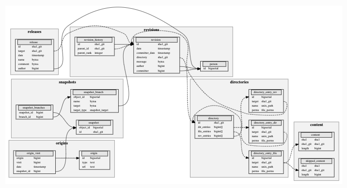

Dataset¶
The dataset is provided as part of the MSR 2020 challenge. The full version spans more than 5 billion unique source code files and 1 billion unique commits, coming from more than 80 million software projects. Contents come from GitHub and GitLab, FOSS distributions like Debian, and language-specific package managers like PyPI. The data is stored in a uniform representation: A Merkle DAG linking source code files in directories, evolution of commits and snapshots of the VCS.
Complete Dataset¶
The Software Heritage Graph Dataset contains a table representation of the full Software Heritage Graph. It is available in the following formats:
PostgreSQL (compressed):
Total size: 1.2 TiB
URL: /graph/latest/sql/
Apache Parquet:
Total size: 1.2 TiB
URL: /graph/latest/parquet/
S3: s3://softwareheritage/graph
popular-4k¶
The popular-4k teaser contains a subset of 4000 popular repositories from GitHub, Gitlab, PyPI and Debian. The selection criteria to pick the software origins was the following: * The 1000 most popular GitHub projects (by number of stars) * The 1000 most popular Gitlab projects (by number of stars) * The 1000 most popular PyPI projects (by usage statistics, according to the Top PyPI Packages database), * The 1000 most popular Debian packages (by “votes” according to the Debian Popularity Contest database)
The teaser has the following configurations: * PostgreSQL (compressed):
Total size: 23 GiB
URL: /graph/latest/popular-4k/sql/
popular-3k¶
The popular-3k-python teaser contains a subset of 3052 popular repositories tagged as being written in the Python language, from GitHub, Gitlab, PyPI and Debian. The selection criteria to pick the software origins was the following, similar to popular-4k: * the 1000 most popular GitHub projects written in Python (by number of stars), * the 131 Gitlab projects written in Python that have 2 stars or more, * the 1000 most popular PyPI projects (by usage statistics, according to the Top PyPI Packages database), * the 1000 most popular Debian packages with the debtag implemented-in::python (by “votes” according to the Debian Popularity Contest database).
The teaser has the following configurations: * PostgreSQL (compressed):
Total size: 4.7 GiB
URL: /graph/latest/popular-3k-python/sql/
Relational Schema¶
The Merkle DAG of the Software Heritage archive is encoded in the dataset as a set of relational tables. A simplified view of the corresponding database schema is shown here:
The following are details of the schema:
content: contains information on the contents stored in the archive.
sha1 (bytes): the SHA-1 of the content
sha1_git (bytes): the Git SHA-1 of the content
length (integer): the length of the content
skipped_content: contains information on the contents that were not archived for various reasons.
sha1 (bytes): the SHA-1 of the missing content
sha1_git (bytes): the Git SHA-1 of the missing content
length (integer): the length of the missing content
directory: contains the directories stored in the archive.
id (bytes): the intrinsic identifier of the directory, recursively computed with the Git SHA-1 algorithm
dir_entries (array of integers): the list of directories contained in this directory, as references to an entry in the directory_entry_dir table.
file_entries (array of integers): the list of files contained in this directory, as references to an entry in the directory_entry_file table.
rev_entries (array of integers): the list of revisions contained in this directory, as references to an entry in the directory_entry_rev table.
directory_entry_file: contains information about file entries in directories.
id (integer): unique identifier for the entry
target (bytes): the Git SHA-1 of the content this entry points to
name (bytes): the name of the file (basename of its path)
perms (integer): the permissions of the file
directory_entry_dir: contains information about directory entries in directories.
id (integer): unique identifier for the entry
target (bytes): the Git SHA-1 of the directory this entry points to
name (bytes): the name of the directory
perms (integer): the permissions of the directory
directory_entry_rev: contains information about revision entries in directories.
id (integer): unique identifier for the entry
target (bytes): the Git SHA-1 of the revision this entry points to
name (bytes): the name of the directory that contains this revision
perms (integer): the permissions of the revision
person: deduplicates commit authors by their names and e-mail addresses. For pseudonymization purposes and in order to prevent abuse, these columns were removed from the dataset, and this table only contains the ID of the author. Individual authors may be retrieved using this ID from the Software Heritage api.
id (integer): the identifier of the person
revision: contains the revisions stored in the archive.
id (bytes): the intrinsic identifier of the revision, recursively computed with the Git SHA-1 algorithm. For Git repositories, this corresponds to the revision hash.
date (timestamp): the date the revision was authored
committer_date (timestamp): the date the revision was committed
author (integer): the author of the revision
committer (integer): the committer of the revision
message (bytes): the revision message
directory (bytes): the Git SHA-1 of the directory the revision points to. Every revision points to the root directory of the project source tree to which it corresponds.
revision_history: contains the ordered set of parents of each revision. Each revision has an ordered set of parents (0 for the initial commit of a repository, 1 for a regular commit, 2 for a regular merge commit and 3 or more for octopus-style merge commits).
id (bytes): the Git SHA-1 identifier of the revision
parent_id (bytes): the Git SHA-1 identifier of the parent
parent_rank (integer): the rank of the parent which defines the total order of the parents of the revision
release: contains the releases stored in the archive.
id (bytes): the intrinsic identifier of the release, recursively computed with the Git SHA-1 algorithm.
target (bytes): the Git SHA-1 of the object the release points to.
date (timestamp): the date the release was created
author (integer): the author of the revision
name (bytes): the release name
message (bytes): the release message
snapshot: contains the list of snapshots stored in the archive.
id (bytes): the intrinsic identifier of the snapshot, recursively computed with the Git SHA-1 algorithm.
object_id (integer): the primary key of the snapshot
snapshot_branches: contains the identifiers of branches associated with each snapshot. This is an intermediary table through which is represented the many-to-many relationship between snapshots and branches.
snapshot_id (integer): the integer identifier of the snapshot
branch_id (integer): the identifier of the branch
snapshot_branch: contains the list of branches.
object_id (integer): the identifier of the branch
name (bytes): the name of the branch
target (bytes): the Git SHA-1 of the object the branch points to
target_type (string): the type of object the branch points to (either release, revision, directory or content).
origin: the software origins from which the projects in the dataset were archived.
id (integer): the identifier of the origin
url (bytes): the URL of the origin
type (string): the type of origin (e.g git, pypi, hg, svn, git, ftp, deb, …)
origin_visit: the different visits of each origin. Since Software Heritage archives software continuously, software origins are crawled more than once. Each of these “visits” is an entry in this table.
origin: (integer) the identifier of the origin visited
date: (timestamp) the date at which the origin was visited
snapshot_id (integer): the integer identifier of the snapshot archived in this visit.